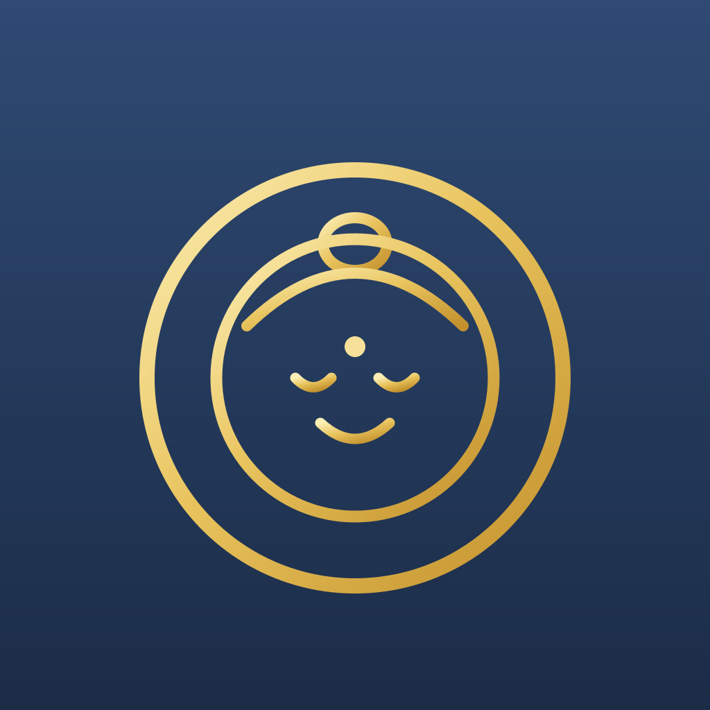

DATA基本の情報
| よみ | にっこうぼさつ |
|---|---|
| 区分 | 菩薩 |
| 目じるし | 日輪 |
| アプリでの登場 | 累計66回となえると現れます |
菩薩「菩薩」とはどういう仏さまか
菩薩（ぼさつ）は、さとりを求めながら、同時に人々を救おうとしている存在。如来になる一歩手前とされ、冠や装身具をつけた華やかな姿で表されます。
4つの区分の見分け方は仏さま図鑑のトップに一覧でまとめています。
同じ区分ほかの菩薩
解説はアプリ「毎日般若心経」の仏さま図鑑と同じ内容です。
分かりやすさを優先した説明で、像容や由来には地域・時代による差があります。
古くからそう伝えられてきたという紹介であり、効果を保証するものではありません。

お手本の声に合わせて、となえる
ふりがな付きの縦書きと、読み上げ。続けた日はカレンダーに残ります。ずっと無料です。